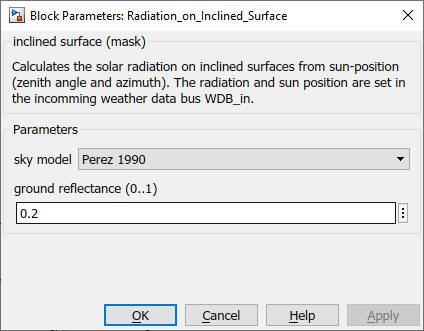

Radiation_on_Inclined_Surface
Path: CARNOT/Weather
Purpose:
This block calculates the radiation on the inclined collector surface.
Description:
The block calculates the radiation on the inclined collector surface.
You may delete this block when your weather data already contains the
solar radiation on the inclined surface. In this case, use the
weather data bus directly for the block
who needs the radiation on the inclined surface.
Sky models
The solar radiation can be split into a direct and a diffuse part. The
diffuse radiation can be further divided into a part of the sky called
isotropic diffuse radiation, which is received from all over the sky
dome, a part that appears close to the beam, the circumsolar diffuse
radiation, and the so-called horizon brightening, that is situated in
the area near the horizon. Moreover the total radiation on the tilted
surface includes the part reflected from the ground and other
surrounding surfaces.
Sky models are the mathematical representation of the diffuse part of
the solar radiation. Depending on the model, the degree of consideration
of the different parts of the diffuse radiation varies. In the CARNOT
Toolbox, three different sky models can be specified, the isotropic sky,
Hay - Davies and the Perez model.
Isotropic sky model
This model considers all the diffuse radiation as isotropic, so that
the circumsolar radiation and the horizon brightening do not appear.
The total radiation is calculated by three terms : the direct radiation,
the isotropic diffuse radiation and the ground reflectance.
Iglb,T = Ibn *cos(q) + 0.5*Idfu,h *(1+cos(b)) + (Idir,h +Idfu,h)*rground *0.5*(1-cos(b))
Idir,h = Ibn *cos(qz)
There are:
| Iglb,T | : | global solar radiation on the inclined or tilted (collector) surface in W/m2 |
| Ibn | : | beam radiation on a normal surface in W/m2, sometimes called direct normal irradiation DNI, normal refers to to a surface perpendicular to the radiation of the sun |
| Idfu,h | : | diffuse solar radiation on the horizontal surface in W/m2 |
| Idir,h | : | direct solar radiation on the horizontal surface in W/m2 |
| b | : | slope of the (collector) surface in degree |
| q | : | incidence angle to normal of (collector) surface in degree |
| qz | : | zenith angle of the sun in degree |
| rground | : | reflection of ground [0...1], (0.2 for usual ground, 0.3..0.5 for sand and snow) |
Sky model by Hay-Davies
This model is an anisotropic one that takes into account the circumsolar
diffuse radiation. There is no treatment of horizon brightening, so the
diffuse radiation consists of two parts, the isotropic and the circumsolar.
The direction of the circumsolar radiation is assumed to be the same as the
beam radiation. An anisotropy index is introduced which is a function of
transmittance of the atmosphere for beam radiation and describes the
portion of horizontal diffuse radiation that is to be treated as forward
scattered. Under clear sky conditions the anisotropy index is high. If the
sky is entirely covered, the anisotropy index is 0 and the model is equal
to the isotropic sky model.
At its core lies the approach of Hay-Davies. They assumed an anisotropic sky.
Radiation upon tilted surface Iglb,T consists of four parts:
Iglb,T = Ibn *cos(q) + 0.5*Idfu,h *(1+cos(b)) + Idfu,h*Ibn/Iextra* (Rb - 0.5*(1+cos(b))) + (Idir,h+Idfu,h) *rground*0.5 *(1-cos(b))
Rb = cos(q) / cos(qz)
There is:
| Iextra | : | extraterrestrial solar radiation on a normal surface in W/m2 |
| WDB_in | : | weather data bus with the radiation on the horizontal surface |
| Position | : | Bus containing the three angles of the surface inclination, see Fixed_surface for details |
Output:
| WDB_out | : | weather data bus with the radiation on the inclined surface |
Parameters and Dialog Box:

Examples:
Open the example explorer from the Matlab command window
ExampleBrowser
or load the examples via the CARNOT library.
Literature:
Duffie, J., Beckman, W.: Solar Engineering of thermal processes,
John Wiley & Sons, 2020
Validation
Hafner 2019:
Validation_Report_inclined_surface
Characteristics:
| Direct Feedthrough | : | Yes |
| Sample Time | : | Inherited from driving block |
| Vectorized | : | No |